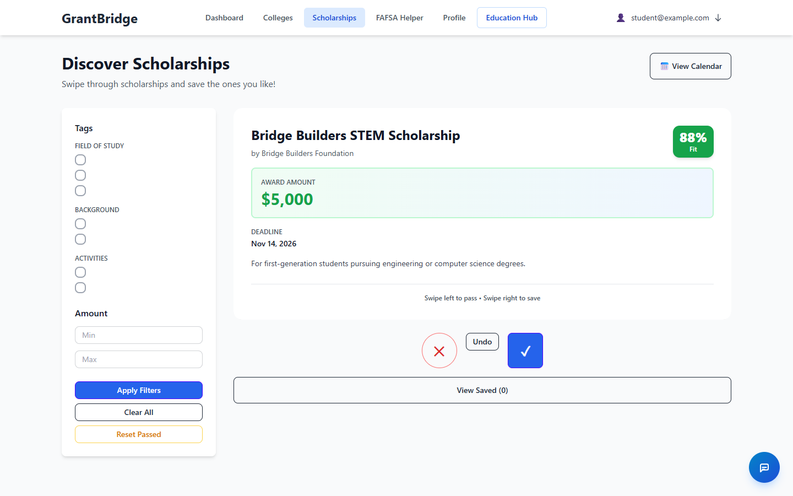
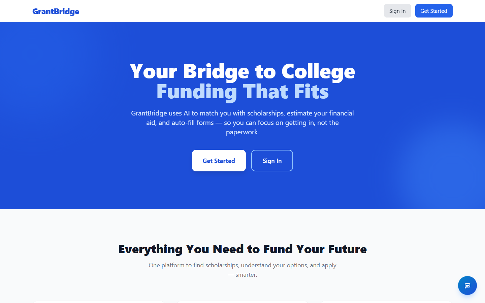
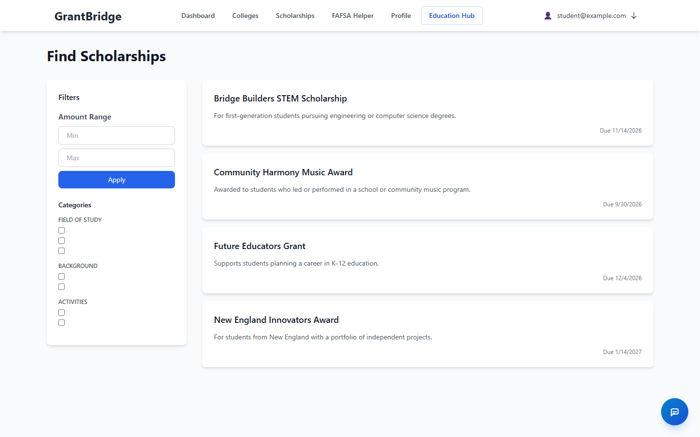
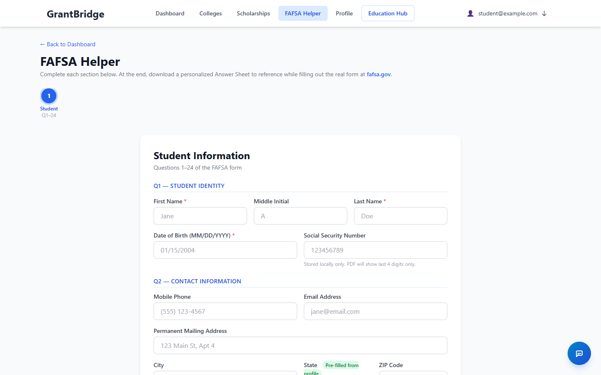
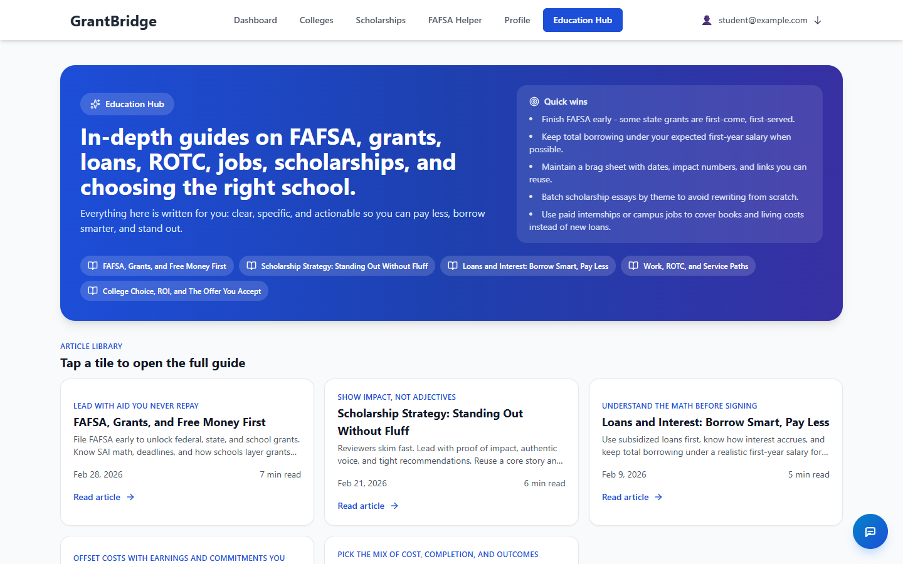
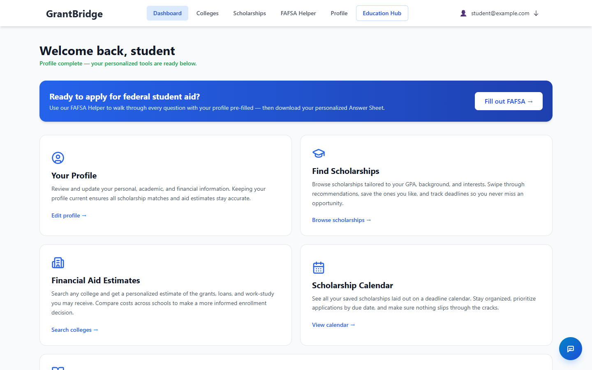
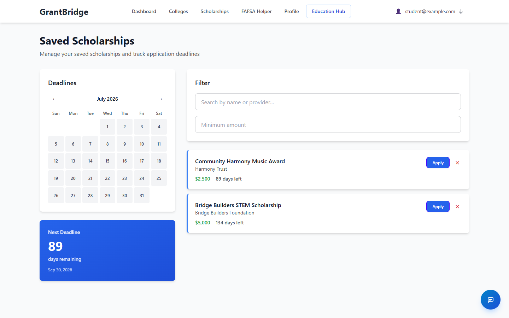
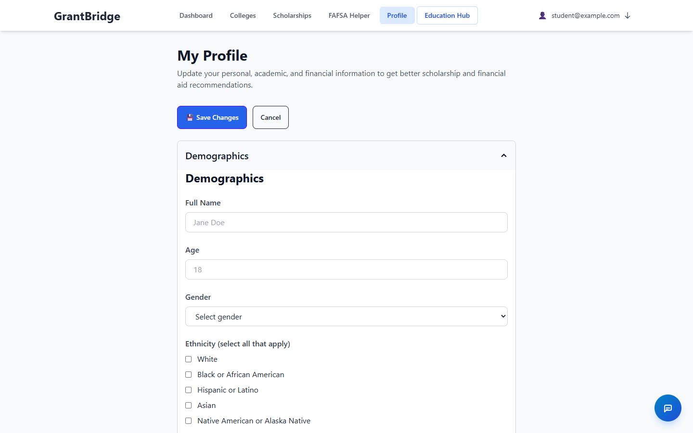
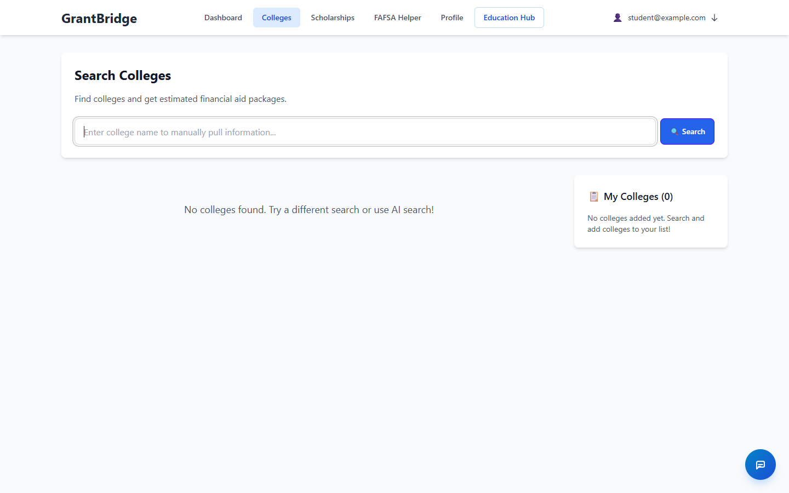

GrantBridge matches students with scholarships, estimates financial aid, walks the FAFSA line by line, and auto-fills college forms with a locally-run Llama 2 — no API keys, no data leaving your machine.

A full-stack React + Express app: PostgreSQL and Redis in Docker, Ollama running Llama 2 locally, and Puppeteer doing the form-filling gruntwork.
A Tinder-style feed scored against your profile — swipe right to save, left to pass, with fit percentages, tag filters, amount ranges, and an undo.
Llama 2 (7B) via Ollama reads your profile and fills college financial-aid forms through Puppeteer. No OpenAI key, no cloud — the model runs on your machine.
A guided, section-by-section walkthrough of the real FAFSA questions, pre-filled from your profile where possible, ending in a personalized answer sheet you take to fafsa.gov.
In-depth guides on FAFSA, grants, loans, ROTC, jobs, and choosing the right school — plus "quick wins" distilled for students who just want the moves.
Saved scholarships lay out on a deadline calendar so applications get prioritized by due date — nothing slips through the cracks.
Long-running work — aid estimates, scraping, AI runs — goes through BullMQ on Redis, so the UI stays responsive while jobs churn.
Captured from the React frontend running locally. Scholarship listings shown are sample data.








Prerequisites: Node.js 18+ and Docker with Compose. For AI features, Ollama with the llama2:7b model.
Any of the three does the same thing: install all dependencies, create .env files with sensible defaults, start PostgreSQL + Redis in Docker, then launch the backend (port 5001) and frontend (port 3000).
./setup.sh # option 1: shell script
make setup # option 2: make
npm run dev # option 3: npmgit clone https://github.com/ItsRecharge/GrantBridge-Hackathon
cd GrantBridge-Hackathon
docker-compose up -d # PostgreSQL + Redis
npm install
npm run setup:env # create .env files
npm run start:all # backend + frontendAI features use Ollama with Llama 2 — no API key. Install Ollama, then:
ollama pull llama2:7b
# backend reads OLLAMA_BASE_URL (default http://localhost:11434)Frontend at http://localhost:3000, backend health check at http://localhost:5001/health (returns {"status":"OK"}). Sign up, complete the multi-step profile, and start swiping.
npm run docker:up / docker:down / docker:logs
npm run start:backend # backend only
npm run start:frontend # frontend only
npm run build # production build of bothGrantBridge/
├── backend/src/
│ ├── config/ DB, JWT, Ollama config
│ ├── models/ Sequelize models
│ ├── controllers/ route handlers
│ ├── middleware/ auth, error handling
│ ├── routes/ Express routes
│ ├── services/ AI, scraping, caching
│ └── migrations/ database migrations
├── frontend/src/
│ ├── pages/ route-level views
│ ├── components/ auth, chat, college,
│ │ fafsa, scholarship, layout
│ ├── context/ Auth + Profile providers
│ └── services/ Axios API wrappers
├── docker-compose.yml PostgreSQL + Redis
└── ollama/ model tuning assetsYour profile (GPA, grade level, state, income band, interests, background) is compared against each scholarship's tags and criteria to produce the fit score shown on every card. Swipes feed back into recommendations; disliked items can be reset from the swipe screen.
A college's aid form is loaded in headless Chrome (Puppeteer), the field structure is extracted, and Llama 2 maps your profile values onto the fields. The run executes as a background job — POST /api/colleges/estimate returns a job id you poll for status.
| Endpoint | Purpose |
|---|---|
POST /api/auth/signup | Register a new user |
POST /api/auth/login | Log in, returns JWT |
GET /api/auth/me | Current user (auth) |
GET /api/profile | Get profile |
POST /api/profile | Create / update profile |
GET /api/scholarships | Search with tags, amount, pagination |
GET /api/scholarships/feed | Swipe feed scored to the profile |
POST /api/scholarships/swipe | Record a left/right swipe |
GET /api/scholarships/liked | Saved scholarships |
GET /api/scholarships/tags | Tag catalog, grouped by category |
GET /api/colleges | Search colleges |
POST /api/colleges/estimate | Queue an AI aid estimate |
GET /api/colleges/estimate/:jobId | Poll estimate status |
| Variable | Purpose |
|---|---|
DATABASE_URL | PostgreSQL (Docker default works out of the box) |
REDIS_URL | Redis for cache + BullMQ |
JWT_SECRET, JWT_EXPIRES_IN | Auth token signing (change the secret in production) |
OLLAMA_BASE_URL | Ollama endpoint (default http://localhost:11434) |
PUPPETEER_HEADLESS, PUPPETEER_TIMEOUT | Browser automation behavior |
VITE_API_URL | Frontend → backend base URL |
npm run setup:env generates both .env files with working defaults for local development.
Frontend 3000 · Backend 5001 · PostgreSQL 5432 · Redis 6379 · Ollama 11434.
No. All AI runs locally through Ollama with the Llama 2 7B model. Your profile and financial details never leave your machine for AI processing — which matters for an app handling income and FAFSA-adjacent data.
Each scholarship carries tags and criteria (field of study, background, activities, amounts, deadlines). The recommendation engine compares them against your profile to produce a match score, and your swipe history sharpens future recommendations.
No — deliberately. It walks the real form's questions with plain-language guidance and produces a personalized answer sheet. You then fill the official form at fafsa.gov with your answers in hand. Sensitive fields like SSN stay local, and the generated PDF only ever shows the last 4 digits.
Hackathon pragmatism: the data services are one docker-compose up away, while the Node servers run directly on your machine for instant reload during development. npm run dev orchestrates all of it.
Ollama loads the 7B model into memory on first request — expect a warm-up delay, then much faster responses. Estimate jobs also run through the BullMQ queue, so check job status rather than waiting on the request.
Yes — pull any Ollama model and update the model name in the backend's Ollama config. 7B is the balance point for running on a typical laptop; bigger models improve form-filling accuracy at the cost of RAM and speed. The repo's ollamaTuning.ipynb documents tuning experiments.
A Puppeteer-based scraper (rate-limited, capped via SCRAPING_MAX_SCHOLARSHIPS) plus seed datasets in datasets/. Tags are extracted at import time to power filtering and matching.
Real issues and their fixes — the first one was found and fixed while building this site.
api.jsA find-and-replace of "localhost" with a machine IP once mangled the identifier pointsToLocalhost in frontend/src/services/api.js into invalid JavaScript, so Vite served a module with a syntax error and React never mounted. This is fixed on main — if you see "Missing initializer in const declaration", pull the latest.
kill -9 $(lsof -ti:3000) # frontend (macOS/Linux)
kill -9 $(lsof -ti:5001) # backendOn Windows: Get-NetTCPConnection -LocalPort 3000 → Stop-Process -Id <pid>.
Make sure the containers are up: npm run docker:up, then npm run docker:logs to watch them come healthy. A quick full reset is npm run docker:down && npm run docker:up. Confirm the backend with curl http://localhost:5001/health.
Check Ollama is running (ollama list should show llama2:7b; pull it if missing) and that OLLAMA_BASE_URL in backend/.env points at it (default http://localhost:11434). First request after a restart is slow while the model loads.
Auth state lives in localStorage (token + user). If the backend restarted with a new JWT_SECRET, old tokens fail verification — log out and back in, or clear the two keys in devtools. Also check the frontend's VITE_API_URL matches where the backend actually listens (5001).
rm -rf node_modules backend/node_modules frontend/node_modules
npm installRaise PUPPETEER_TIMEOUT (default 30000 ms) in backend/.env — college sites can be slow. Set PUPPETEER_HEADLESS=false locally to watch the browser and see exactly where a form gets stuck.